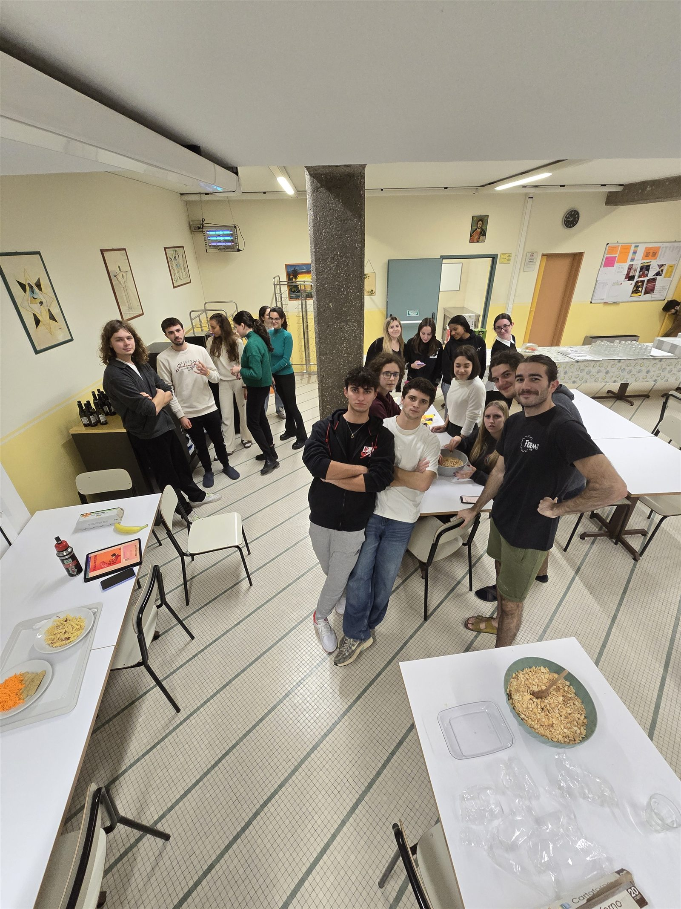

The journey together
Eighteen people in a borrowed common room, a table of ingredients and nothing switched on. Nobody had met before that evening.
Jan 20, 2025
Padova · free · no kitchen needed
Cuochi senza fuochi means cooks without fires. About fifteen people get together in Padova and make desserts and easy recipes on the spot: no oven, no hob, nothing that needs a real kitchen. The ingredients are already there when you arrive. You pick up a recipe you can redo in your own room, and then everyone eats the result.

A real session in a borrowed common room. Almost everybody here had met for the first time two hours earlier.
Zero euro to take part No oven and no hob, ever About 15 people per session Monthly in Padova
Start to finish
Four steps, with nothing hidden between them. This is the whole format.
One message on Instagram, TikTok or YouTube is enough. Back comes the address, the time, and the recipe for that evening.
This is the part people get wrong. Nothing gets cooked beforehand and nobody brings a dish. Everything is already on the table when you walk in.
Somebody talks the group through a recipe that needs no oven and no hob. Salame di cioccolato, tiramisù, a no bake cheesecake. The mixing, the crushing and the rolling get shared out, standing up, talking to whoever is next to you.
It goes in the fridge, everybody waits, and then the whole thing disappears. You leave with a recipe you can repeat in a room with no kitchen, and with the numbers of the people you made it with.
Why it works
The name is the promise. Student rooms come with two hobs that half work, no oven, and a fridge shared between five people. Every recipe here is built for exactly that, so nobody is ever excluded by their kitchen.
Taking part costs nothing. Meeting people in this city usually means a bar tab or a club entry, every single time. This is the version you can afford every month.
No app, no swiping, no feed. Fifteen people, one table, phones face down and everyone’s hands covered in crushed biscuit. It turns out that talking is easier when you are both busy doing something else.
Housing is solvable. Loneliness is the expensive part.
the idea behind Cuochi senza fuochi, March 2022
Why this exists
When you move somewhere new, you sort out a room and a commute within weeks. Those two things guarantee the financial capital. Human capital is the one nobody hands you a contract for, and working or studying full time leaves very little room to build it.
Cuochi senza fuochi exists because the usual alternatives don’t work for everyone. Bars cost money every single time. Clubs are loud and you meet no one. Apps put you back on a screen. Standing around a table making a dessert costs nothing, and it puts you in a room with people who live ten minutes away: the ones you can actually keep seeing.
From the table
Photos and short write ups from the last few. This is what you would be walking into.
Follow along
Every session gets filmed and photographed. If you would rather see it before you commit, start here. A message on any of the three is also a perfectly good way to sign up.
You don’t need to know anyone. You don’t need to cook. You don’t need to bring anything. Most people at their first Cuochi senza fuochi came on their own, and that is the normal way to arrive.